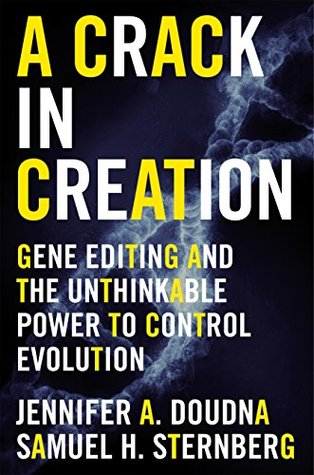

A Crack In Creation: A Nobel Prize Winner's Insight into the Future of Genetic Engineering
Reseña por Jorge I. Zuluaga

Ver reseña en GoodReads (necesita cuenta)
Este libro es justamente el grito "audible" entre los experto pero poco escuchado por la población general, de los protagonistas de una revolución tecnológica y científica en desarrollo que, a mi parecer, de tener los impactos que sus protagonistas prometen, podría cambiar el curso de la historia biológica de nuestras especie y tal vez (en el caso más extremo) el de la evolución de la vida en la Tierra.
¿Estaré exagerando? Dense la oportunidad de leer el libro y saquen sus propias conclusiones.
Bueno, ¿pero cuál es la tal revolución?
El libro describe la historia reciente de una nueva técnica de "edición genética". Por este término, que parece sacado de una película de ciencia ficción, entendemos cualquier procedimiento para cambiar las instrucciones contenidas en el ADN (principalmente en genes), la molécula que es usada por la vida para fabricar y hacer funcionar todos los organismos en la Tierra.
Creo que nadie de la generación que puede leer esta reseña desconoce lo que son las terapias o la modificación genética, usadas desde hace mas de 20 años en el mundo de la medicina y la biotecnología; pero la nueva técnica de "edición genética" de la que trata este libro, es radicalmente diferente.
La técnica, conocida como CRISPR-Cas, o simplemente CRISPR fue descubierta por una de las autoras (Jennifer Doudna) y sus colaboradores en la década que apenas terminó (segunda década del siglo XXI). El descubrimiento (como la mayoría de los grandes hallazgos de la ciencia) provino de una fuente inesperada: el estudio del sistema inmunológico de las bacterias.
En resumidas palabras (¡lean el libro y no pierdan más el tiempo con esta reseña), con CRISPR es posible editar desde letras individuales hasta múltiples genes de cualquier organismo en la Tierra, pero con unas capacidades sin precedentes: 1) la edición se puede hacer sobre las células de un organismo ya desarrollado y sobre casi cualquier tejido, 2) el proceso de edición es increíblemente sencillo y barato (comparado con el de otras técnicas de edición genética), 3) puede ser usado por cualquiera con un equipo muy básico, 4) permite cambiar casi cualquier rasgo del "fenotipo" producido por casi cualquier gen o grupos de genes o su expresión, 5) los mecanismos moleculares para la edición pueden escribirse en el mismo genoma, de modo que el organismo se convierte en él mismo en una maquina de CRISPR.
Con todo, desde las aplicaciones más inocuas de la técnica (seguir la línea ya conocida de producción de plantas y animales transgénicos) hasta las más peligrosas (el diseño de bebes a la medida que son además capaces de transmitir sus cambios a las siguientes generaciones) no parece haber duda de que CRISPR tiene el potencial de modificar el "libro de la vida" en la Tierra para siempre. Con CRISPR, según algunos expertos, esencialmente estamos en capacidad de "tomar el control" de la evolución humana y tal vez de la mayoría de las especies con las que convivimos en la Tierra.
El libro esta muy bien escrito. Las explicaciones científicas son claras incluso para quiénes no somos expertos (aunque debo confesar que unas bases sencillas de genética ayudan mucho). Va más allá de ser simplemente un libro técnico y en los últimos capítulos se abordan también los asuntos humanos, sociales, filosóficos y éticos de CRISPR y en general de la manipulación genética de organismos.
Tiene un estilo muy americano (desde mi punto de vista) en el que la descripción de los problemas técnicos, científicos, éticos, etc. se mezcla con anécdotas y situaciones de la vida cotidiana de los autores (sinceramente irrelevantes - de allí que no le ponga el máximo puntaje), un "truco" que creo usan como estrategia de mercadeo para atraer a más personas que tal vez no están tan interesadas en la parte técnico pero que igual deberían leer el libro.
Que no l@s coja la revolución de CRISPR diciendo "¿yo por qué no sabía más de esto antes?". Lean "A crack in creation".